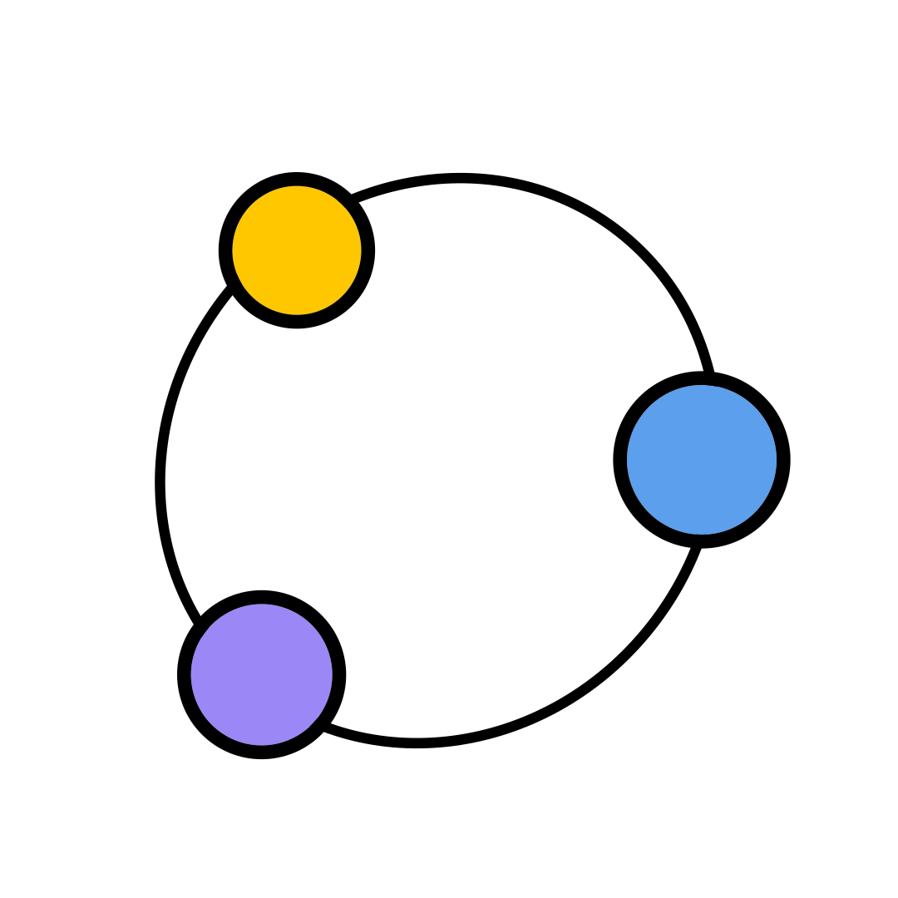
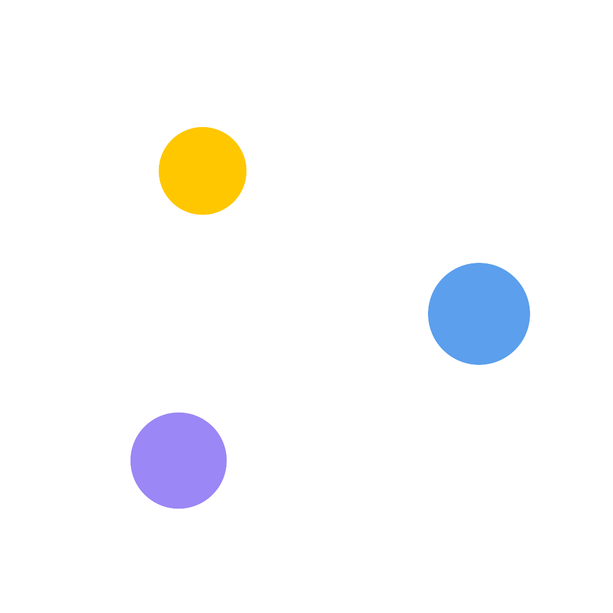

Light · primary

Dark · inverted
Orbital
Mark.
Three planets —
yellow
,
blue
,
purple
— orbiting an elliptical ring. 12.5px stroke at 1080×1080. Dots use solid fills with a 1.5–3px black outline.
Wordmark.
Trebuchet MS Bold ·
colors.blue
.